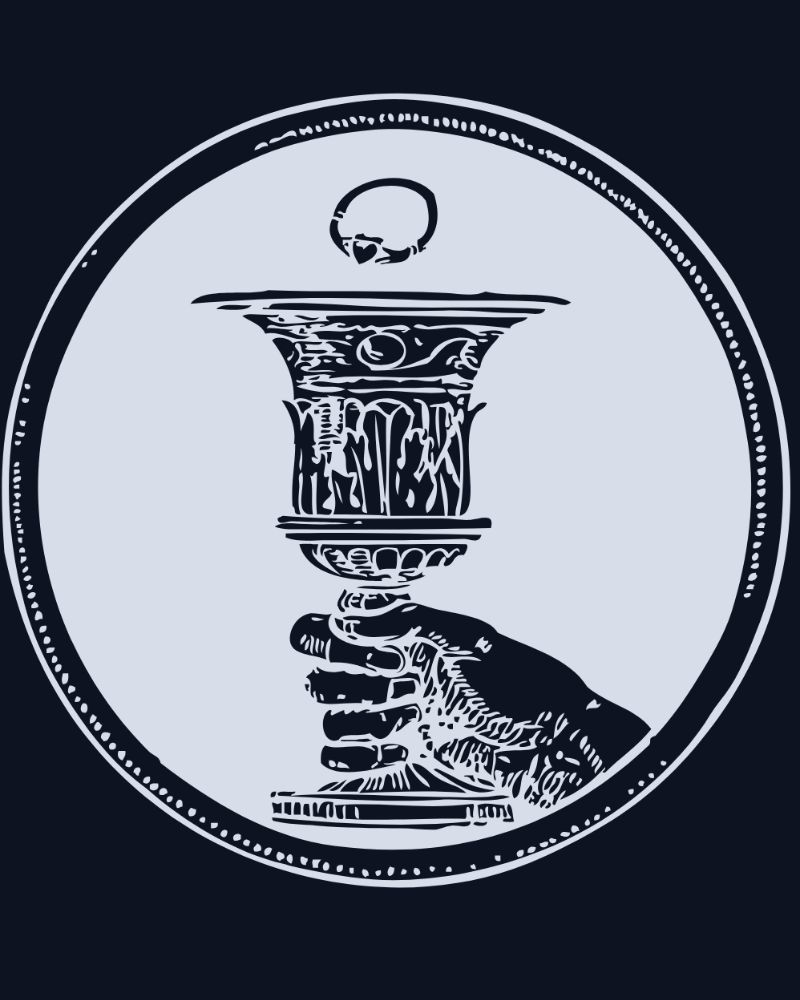

University of Edinburgh · School of Mathematics
Decisions Under Uncertainty
We quantify uncertainty and turn it into decisions.
Bayesian inference, uncertainty quantification and machine learning, applied to problems where the stakes are real.
